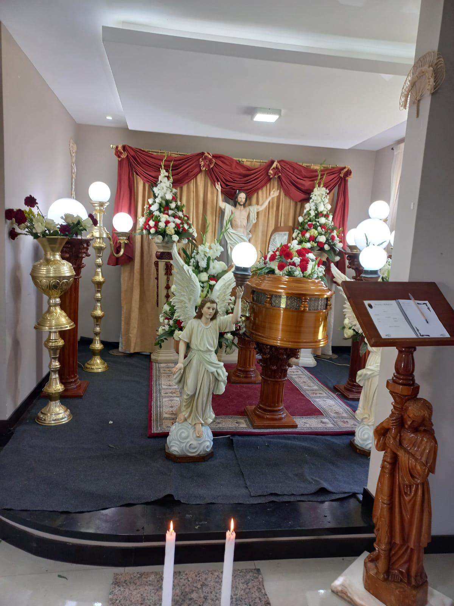
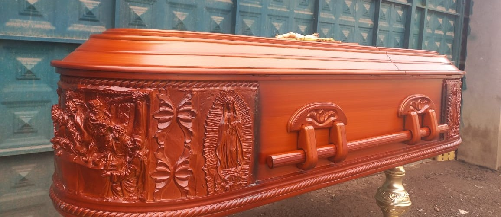
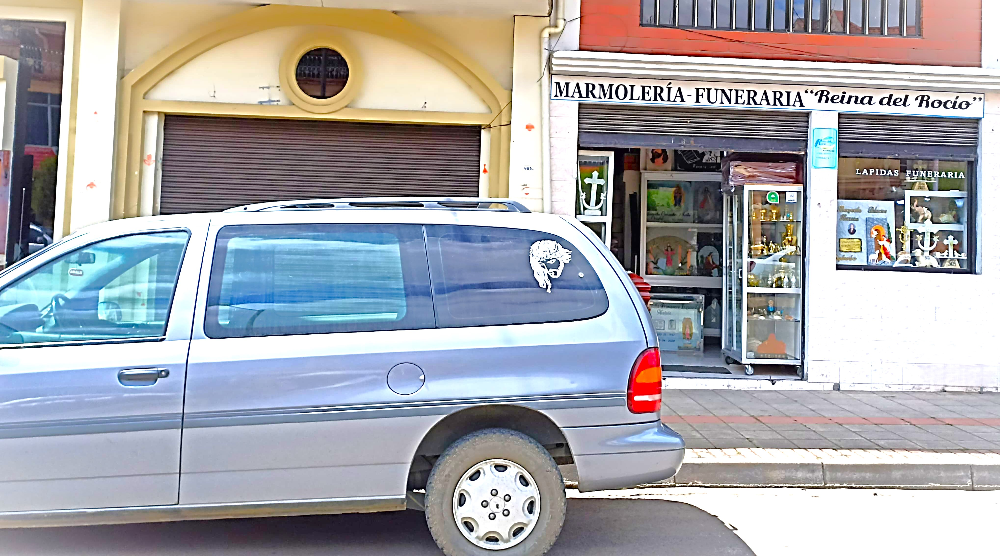

Funeraria
En Funeraria Reina del Rocío brindamos acompañamiento respetuoso y profesional en los momentos más difíciles. Ofrecemos servicios integrales que incluyen ataúdes, arreglos florales, transporte, trámites legales y asesoría personalizada, asegurando que cada despedida se realice con dignidad, cuidado y humanidad.

Servicios Exequiales
Honramos la vida del ser querido con servicios únicos y significativos.

Cofres de madera y metal
Ataúdes de diseño exclusivo.

Autocarroza
Vehículo fúnebre equipado para brindar un traslado digno.

Arreglos Florales
Composiciones florales de alta gama que expresan amor eterno, delicadeza y gratitud.